LAB 002 ／ PANORAMA STITCH
从真实拍摄帧出发，拆开特征匹配、单应性、羽化与失败信号
Vision Hub — See the World. Solve Real Problems.
全景拼接不是把照片并排。它先要找到不同画面里的同一个地方，再决定重叠区域由谁覆盖。
本文看点
01
怎样找到共同位置
02
怎样处理重叠接缝
03
失败时该看哪里
手机横着扫过一片山景，三次快门会得到三个不同画框。左边一张有山脊，中间一张有山脊和云，右边一张又带进新的山谷。人能迅速看出它们属于同一处风景；程序只拿到三组像素，必须把“看起来一样”变成可计算的对应关系。
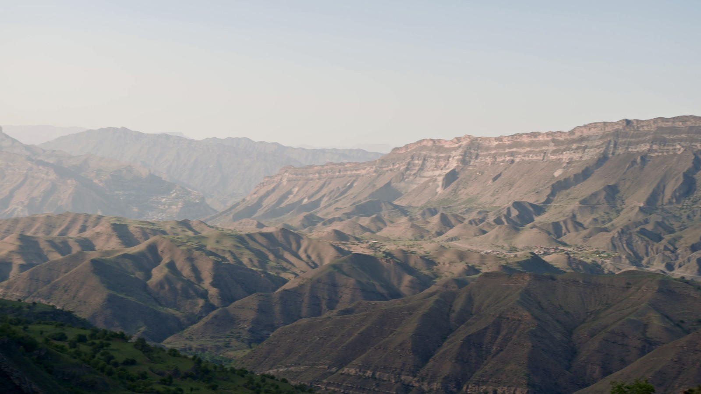
— 山景实拍帧。作者：cottonbro studio；来源：Pexels 视频 9943097；Pexels License。此图仅做裁剪、校色与缩放，不是生成图。
这就是 LAB 002 的主线：先找到同一个地方，再决定谁覆盖谁。前半句解决对齐，后半句解决融合和裁剪。
01
FIND THE SAME PLACE
第一步不是直接处理千万级像素，而是把照片缩到适合分析的尺寸，再寻找局部特征。当前实现用 ORB 在灰度图上挑出最多 2500 个关键点，为每个点生成二进制描述子。山脊转折、云层边缘、建筑轮廓通常比大片纯色更容易留下稳定线索。
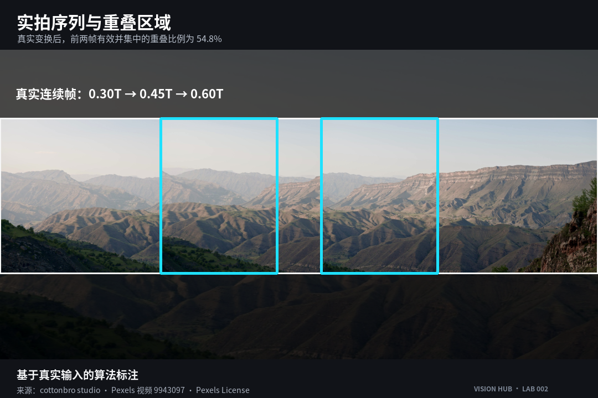
— 图 01｜实拍照片序列与重叠区域。基于真实输入的算法标注；cottonbro studio，Pexels 视频 9943097，Pexels License。
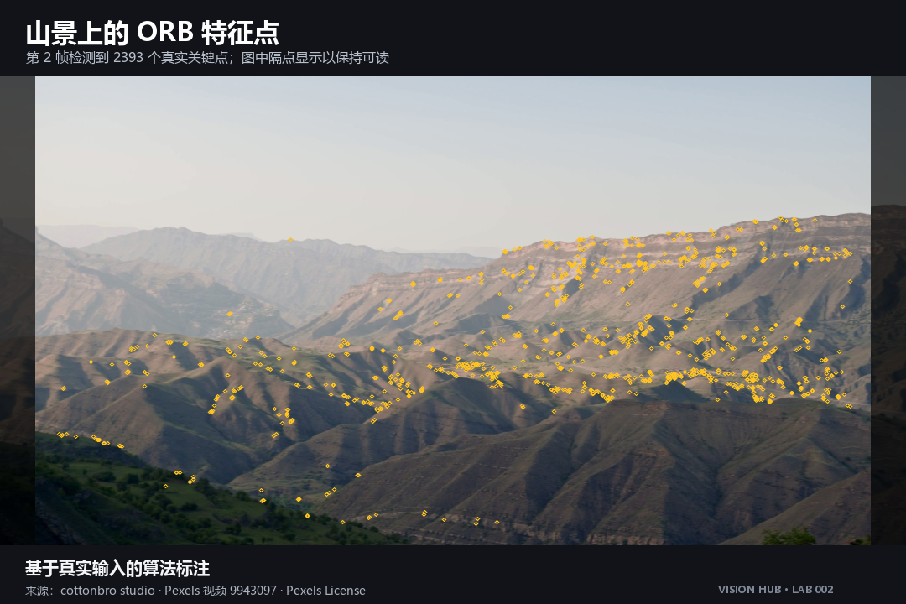
— 图 02｜山景照片上的 ORB 特征点。基于真实输入的算法标注；cottonbro studio，Pexels 视频 9943097，Pexels License。
两张相邻照片各自有了描述子，接下来才是“配对”。BF-Hamming 会为一个描述子寻找距离最近的候选，但最近不代表可信：重复的树林、窗格或波纹，可能同时给出几个相似答案。
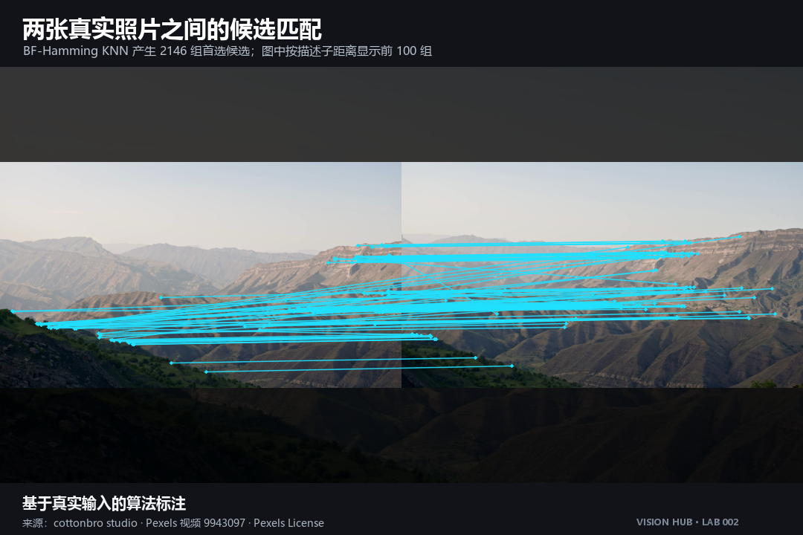
— 图 03｜两张真实照片之间的候选匹配。基于真实输入的算法标注；cottonbro studio，Pexels 视频 9943097，Pexels License。
项目先做 0.75 比率筛选：最优候选必须明显优于第二候选；再做双向一致性检查，只有 A 选中 B、B 也选回 A 的匹配才留下。它不是为了让线条更整齐，而是在估计变换前删掉含糊关系。
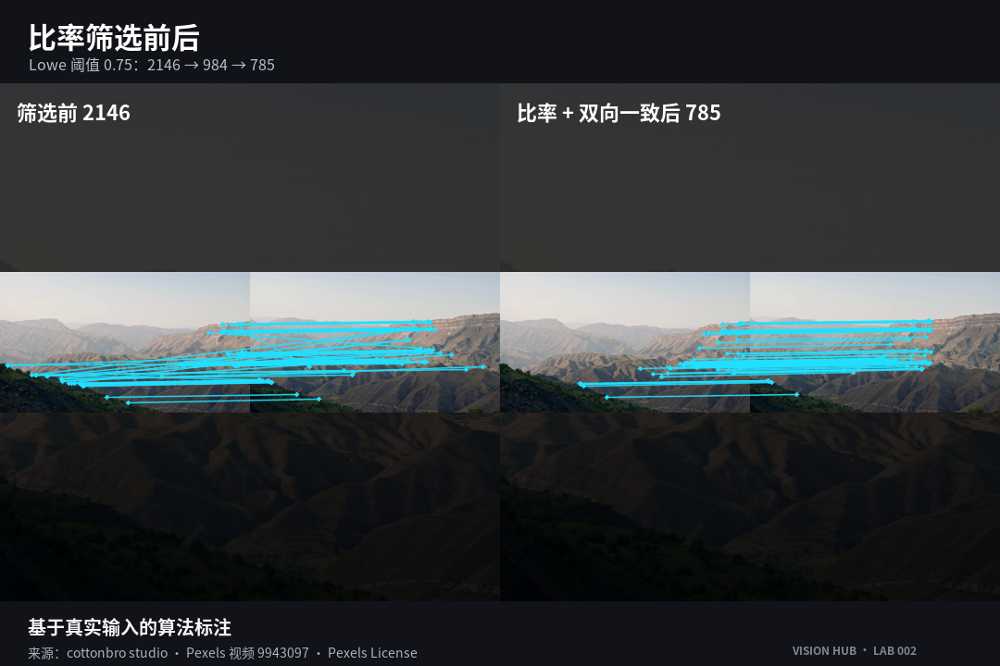
— 图 04｜比率筛选前后。基于真实输入的算法标注；cottonbro studio，Pexels 视频 9943097，Pexels License。
剩余匹配仍可能出错。RANSAC 会反复抽取小组对应点，寻找能解释最多匹配的单应性；符合模型的是内点，偏离的是离群点。当前版本还检查内点数量、内点率、中位重投影误差、变换稳定性和变换后的边界。于是失败不再只是“拼不上”，而会落到具体照片对和固定错误码。
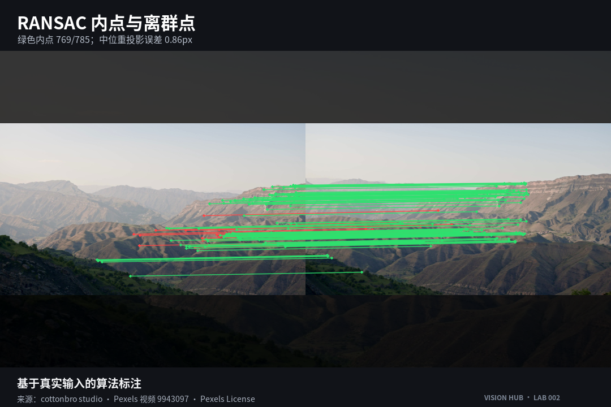
— 图 05｜RANSAC 内点与离群点。基于真实输入的算法标注；cottonbro studio，Pexels 视频 9943097，Pexels License。
02
COMPOSE AND BLEND
三张照片不能都向最左边靠，否则误差会一路累积。LAB 002 选择序列中间图作为锚点，向左右累计相邻变换，再计算所有照片变换后的有效范围。这个范围决定全景画布需要多大，也决定手机内存预算能否承受。
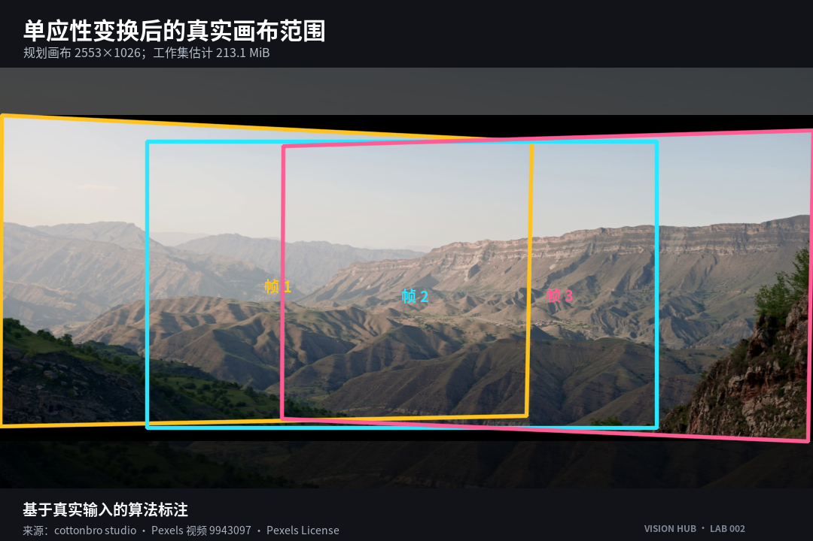
— 图 06｜单应性变换后的真实画布范围。基于真实输入的算法标注；cottonbro studio，Pexels 视频 9943097，Pexels License。
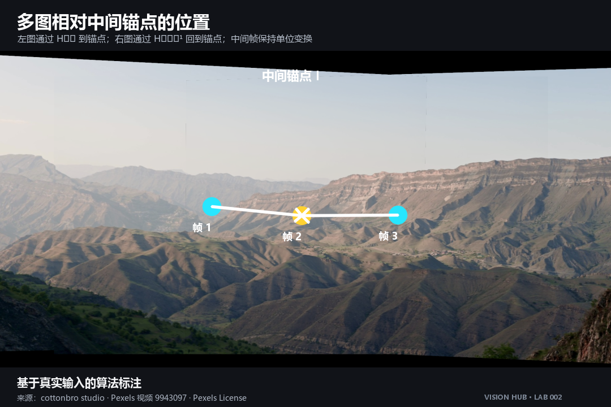
— 图 07｜多图相对中间锚点的位置。基于真实输入的算法标注；cottonbro studio，Pexels 视频 9943097，Pexels License。
坐标对上了，接缝仍可能显眼。同一面山坡在两次曝光里会稍亮或稍暗，因此程序只在真实重叠区估计受限增益，并把范围夹在 0.7 到 1.3 之间。接着根据有效掩膜到边界的距离生成羽化权重，让一张图的贡献逐渐减弱，另一张逐渐增强。
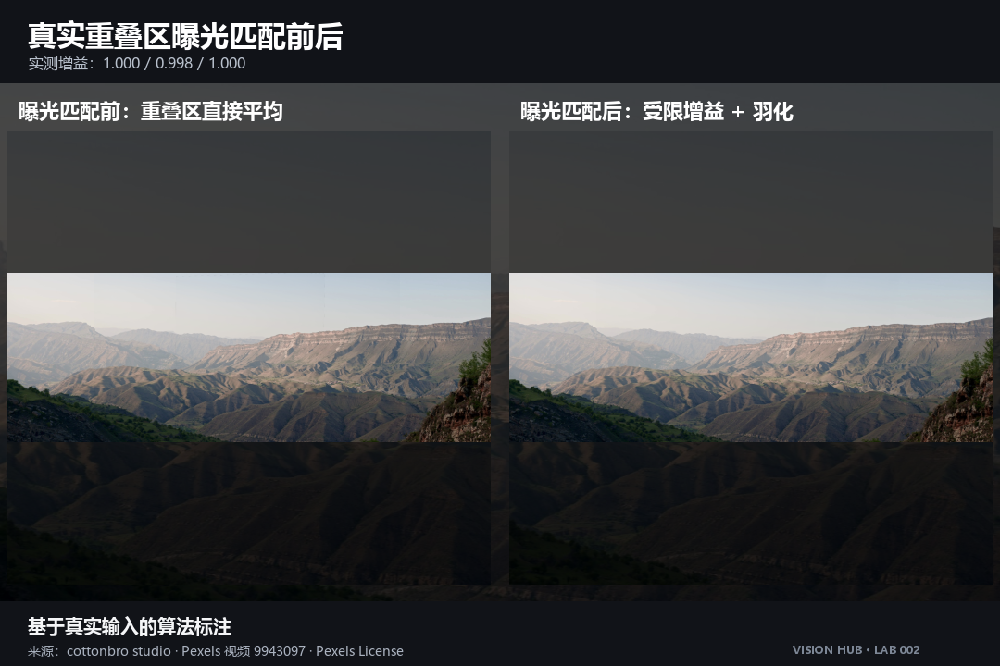
— 图 08｜真实重叠区曝光匹配前后。基于真实输入的算法标注；cottonbro studio，Pexels 视频 9943097，Pexels License。
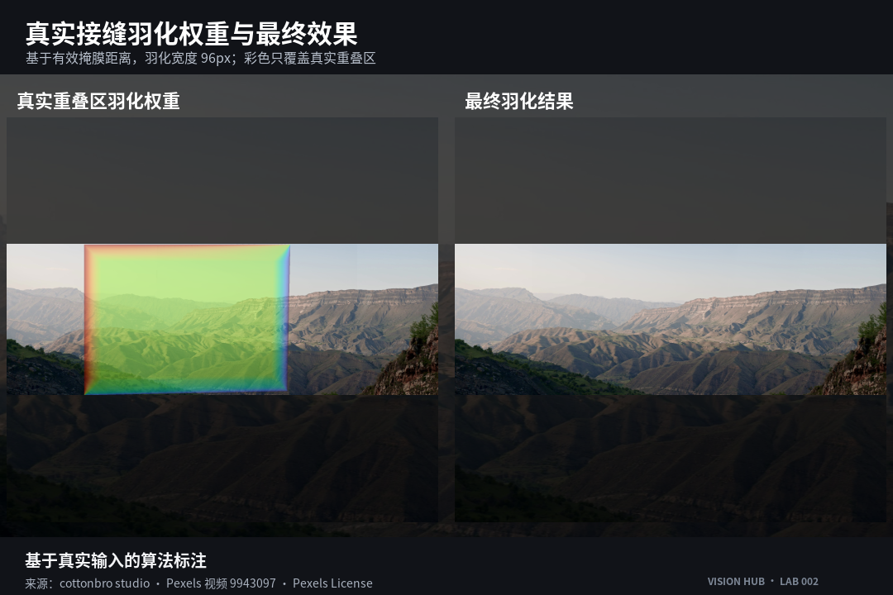
— 图 09｜真实接缝羽化权重与最终效果。基于真实输入的算法标注；cottonbro studio，Pexels 视频 9943097，Pexels License。
最后，程序从有效掩膜中寻找不含空洞的安全矩形，并向内收缩 2 像素。到这里，“谁覆盖谁”才真正结束：它包括曝光、权重、有效范围和裁剪，不是简单各设一半透明。
03
MOBILE WORKFLOW
Web 版把流程压成选择照片、确认顺序、拼接导出三步。相册入口支持多选；拍摄入口提示后置相机。MDN 同时提醒，这个属性在移动浏览器上的支持并不完全一致，所以页面保留普通相册入口，不能把“提示相机方向”写成“所有手机都会直接打开后摄”。
照片默认按选择或拍摄顺序，只匹配相邻项。顺序错了，可以在缩略图列表里调整；开始拼接后会显示处理阶段，也可以取消。完成后可查看接缝、微调裁剪并下载 JPEG，支持条件满足时再调用系统分享。
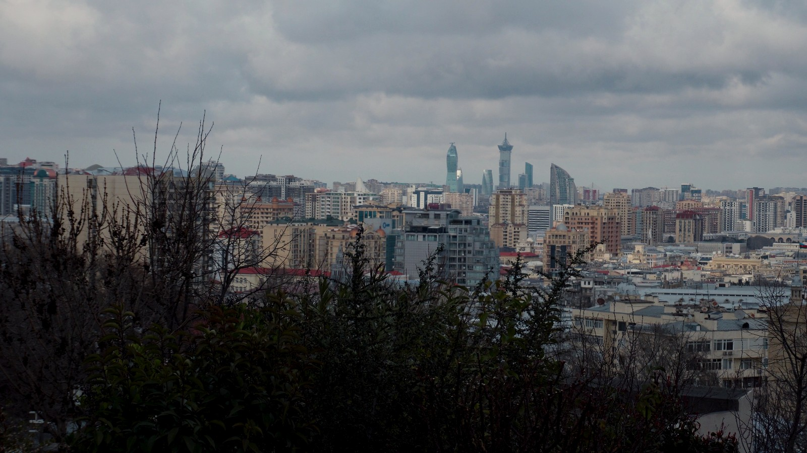
— 城市四图实拍示例。作者：Zulfugar Karimov；来源：Pexels 视频 36722864；Pexels License。
隐私边界：当前页面读取本机照片，并从同站点加载示例和 OpenCV 文件；应用代码与自动化检查中没有图片上传、远程处理、分析或第三方存储请求。
04
FAIL WITH EVIDENCE
低纹理不等于必然失败。提交的完整三帧海面序列在本次真实诊断中成功拼接；但只截取海面区域做压力测试后，947 个候选只留下9 组比率匹配，低于最少内点要求，程序返回 INSUFFICIENT_OVERLAP。
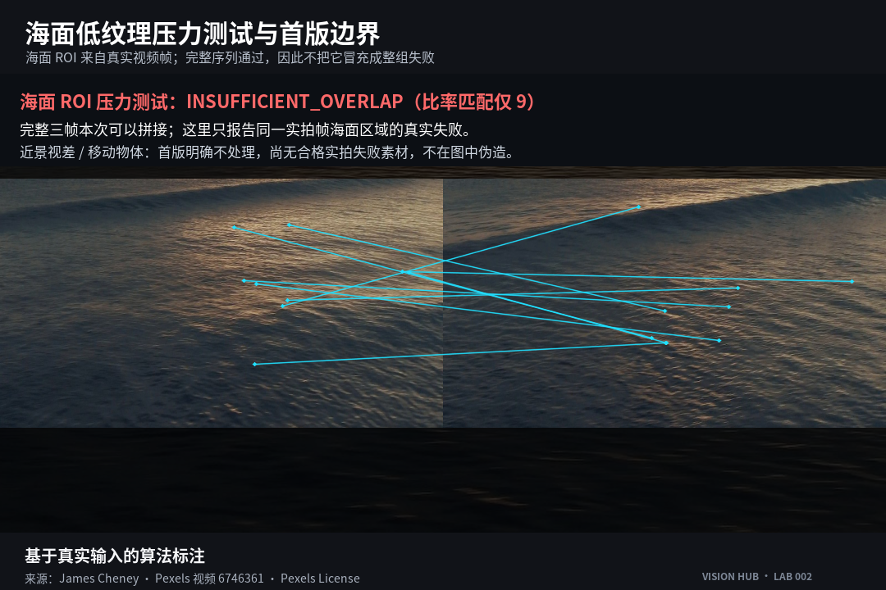
— 图 10｜海面低纹理压力测试。基于真实输入的算法标注；James Cheney，Pexels 视频 6746361，Pexels License。
这个结果只说明当前样例中的海面局部缺少足够独特的对应关系，不能外推为“海面一定拼不上”。更实用的动作是回到失败照片对：增加相邻重叠，保留远处轮廓或岸线，减少纯水面占比，再重新拍摄。
BOUNDARY
首版不做圆柱或球面投影、束调整、多频段融合、自动全排序、移动物体去鬼影和 360 度闭环。近景视差与移动物体重影需要另外的真实拍摄来验证；本文没有相应图像证据。
05
RUN THE LAB
Python 版可以直接接收两张以上照片：
python -m panorama_stitch image1.jpg image2.jpg image3.jpg --output panorama.jpg
不传图片时会使用仓库内的真实山景序列。在线体验：LAB 002 手机端全景拼接；源码：GitHub Vision-Hu13。
发布状态：可发布。真实 Android Chrome 与 iPhone Safari 操作录屏仍为 PENDING_DEVICE_CAPTURE；取得原生录屏和设备证据前，不插入模拟动图。
如果第一次拍摄只记一件事：让每张照片与下一张保留稳定、清晰、有纹理的重叠。算法需要的不是“差不多同一个方向”，而是能被反复认出的同一个地方。
CREDITS ／ LICENSE
山景与图 01—09 底图：cottonbro studio；城市帧：Zulfugar Karimov；海面与图 10 底图：James Cheney。三组均来自对应 Pexels 作品页并适用 Pexels License。
文章文字与原创算法标注排版采用 CC BY 4.0；第三方实拍内容不在该授权范围内。